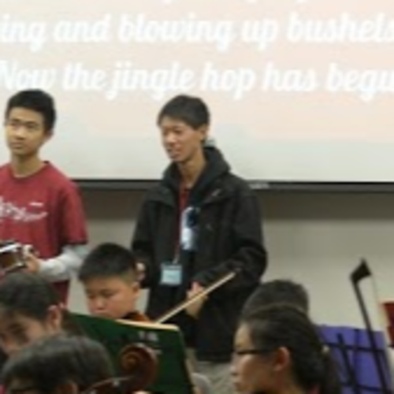

Yi-lin Chien
My name is Yi-lin Samuel Chien. I am currently a third year student at University of California, Riverside pursuing a Bachelor's degree in Biology.
Currently, I am pursuing a Bachelor's degree in Biology. I am hoping that a Bachelor's in Biology would help me puruit a career in a laboratory.
In the future, I hope to work as a clinical laboratory scientist. It has been my dream to work in a clinical laboratory setting. Thank you.
Experience
Laboratory Assistant
• Helped set up and assisteed in various experiments
• Speaker at hack-a-thons
• Experience with various laboratory skills, such as micropipets, PCR, and gel electrophoresis
Office Assistant
• Helped manage the finances of the office
• Processed insurance claims
Audio/Visual Personelle
• Managed the audio and visual setups for events
• Helped coordinated events
Education
University of California, Riverside
Mount San Antonio College
Portfolio
